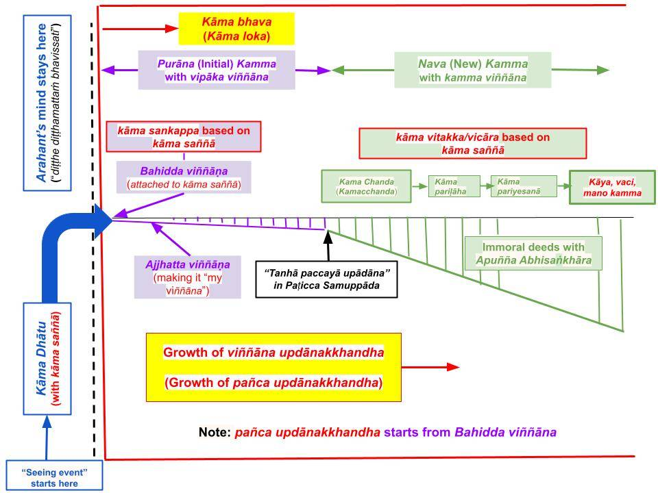

Sandiṭṭhiko is a Sotapanna who can discern how “san” (rāga, dosa, moha) gets “added” to a “pure mind” (pabhassara mind) via attaching to saññā. Each realm (except the asañña realm) has a “built-in” (distorted) saññā. Only by understanding the worldview of a Buddha can a mind overcome the tendency to attach to that (distorted) saññā.
January 11, 2025; rewritten May 17, 2025
Ancient Yogis Also Realized Rāga and Dosa as Root Causes of Suffering
1. Ancient yogis were there before the Buddha (like Ālara Kālāma and Uddaka Rāmaputta), who realized that attachment to sensual pleasures led to suffering. They forcefully abstained from sensual pleasures; they moved to jungles to avoid tempting situations, and even cultivated the highest jhānās and samāpattis. Even though they could avoid rebirths in the apāyās (temporarily), they could not reach Nibbāna, i.e., break away from the rebirth process.
- The critical reason is that they did not and could not figure out the root cause of attachment to sensual pleasures. We attach to sensual pleasures like the sweet taste of honey because tasting honey generates a "pleasure sensation."
- By examining how the mind works, the Buddha discovered that such "pleasure sensations" are mind-made. We also have such "pleasurable experiences" when watching a good magic show. But it is no longer enjoyable once we realize how the magic trick works. The Buddha gave that same analogy in the “Pheṇapiṇḍūpama Sutta (SN 22.95).” See "Fooled by Distorted Saññā (Sañjānāti) – Origin of Attachment (Taṇhā)."
- Once we figure out how such "pleasure sensations" are built into our physical bodies (via Paṭicca Samuppāda), we would realize the futility of attaching to them. At that point, one does not need to forcefully abstain from sensual pleasures (like Ālara Kālāma and Uddaka Rāmaputta).
Importance of Understanding the "Purāna Kamma" Stage
2. Ancient yogis like Ālara Kālāma and Uddaka Rāmaputta understood how a mind becomes increasingly contaminated by attaching to sensory inputs, how that leads to committing immoral deeds, which in turn lead to future suffering (not only via rebirths in the apāyās, but also agitation/anxiety in the current life itself).
- The Buddha discovered that the above part is preceded by an automatic process that occurs without our conscious awareness.
- In the following chart, only the "nava kamma" stage of a two-step process was known to those ancient yogis. It is preceded by the "purāna kamma" stage that Buddha discovered.

Download/Print: “Purāna and Nava Kamma – 5“
- Even though the accumulation of "san" (rāga, dosa, moha; see "What is “San”? Meaning of Sansara (or Samsara).") is stronger in the "nava kamma" stage, a mind would not advance to that "nava kamma" stage if this two-tep process is fully understood!
- In other words, without stopping the first "purāna kamma" stage, it is impossible to stop the "nava kamma" stages entirely. Even those yogis' minds would be attached to tempting sensual pleasures if they came back from the jungles to "pleasure-filled society."
- Thus, without understanding the "purāna kamma" stage, one would not become a "sandiṭṭhiko" (who has "seen the origin of 'san' with wisdom"), as we discuss below.
One Needs to Understand the "Purāna Kamma" Stage to Become “Sandiṭṭhiko“
3. The first "purāna kamma" stage is where “san” (rāga, dosa, moha) is incorporated into a “suffering-free pabhassara mind” automatically. We do not have direct control over that, i.e., we cannot stop it from proceeding at that time.
- Instead, we must understand how a mind is enticed (attracted) by a "false/distorted saññā."
- That "pleasurable sensation" due to the "false/distorted saññā" leads to three ways of attaching to sensory inputs, i.e., via wrong view (diṭṭhi), cravings (taṇhā), and "a sense of me" (māna). The Buddha explained that in the “Etaṁmama Sutta (SN 22.151),” among many other suttās. Let us briefly review that.
- The pabhassara mind is discussed in "Pabhassara Citta and Saññā Vipallāsa" and "Anuseti – How Anusaya Grows with Saṅkhāra."
Diṭṭhi, taṇhā, Māna - Three Ways of Attachment
4. The following is my translation of the necessary verse in the “Etaṁmama Sutta (SN 22.151)” to provide the basic idea. “Bhikkhus, what causes (an average) person to regard something (a rupa) like this: ‘This is mine (etaṁ mama), this is “me” (esohamasmi or eso aham asmi), this is for my benefit (eso me attā)’?”
- The "pleasurable sensation" ("false/distorted saññā") leads to the wrong view (diṭṭhi) that it is beneficial, i.e., "it is for my benefit."
- That would, in turn, lead to a desire (taṇhā) to seek more of it with the perception that "it is worthwhile to make it mine".
- The more one keeps doing that, the more it leads to "a sense of me" (māna).
- We have been doing all three for an unimaginable time in the beginningless rebirth process.
Ten Saṁyojana that Bind Us to the Rebirth Process
5. The Buddha divided those three into subcategories of ten saṁyojana (sansāric bonds). As mentioned above, those bonds have been solidified over countless lives!
- The diṭṭhi category is divided into three saṁyojana: sakkāya diṭṭhi, vicikicchā, silabbata parāmāsa.
- The taṇhā category is divided into four saṁyojana: kāma rāga, rupa rāga, and arupa rāga. Here, kāma rāga also leads to paṭigha.
- Finally, the "sense of me" (māna) leads to three saṁyojana: māna, uddacca, avijjā.
- We have discussed saṁyojana in "Dasa Samyōjana – Bonds in Rebirth Process."
6. First, we can cultivate paññā (wisdom) and break the three saṁyojana associated with wrong views. That only leads to a preliminary understanding of the overall process, and one becomes a Sotapanna.
- However, that understanding is insufficient to break the tendency to attach, i.e., the four saṁyojana associated with taṇhā. That requires the cultivation of Satipaṭṭhāna (Ānāpānasati).
- At the Sakadāgāmi stage, one weakens kāma rāga and paṭigha saṁyojana, which are broken/removed at the Anāgāmi stage.
- The other five saṁyojana are removed at the Arahant stage.
Upavāṇasandiṭṭhika Sutta – How to Become Sandiṭṭhiko
7. In the “Upavāṇasandiṭṭhika Sutta (SN 35.70),” bhikkhu Upavāṇa asked the Buddha, “People talk about Dhamma being sandiṭṭhiko. What does it mean?” The Buddha explained as follows. Instead of translating verse by verse, I will convey the basic idea.
- To be a “sandiṭṭhiko” (one who has understood or seen how the “san accumulation process starts”), one must know that it starts with the "purāna kamma" stage, where the critical rūparāgappaṭisaṁvedī step takes place without us being aware.
- The Buddha explains how a mind attaches to a sight via two steps: “Idha pana, upavāṇa, bhikkhu cakkhunā rūpaṁ disvā rūpappaṭisaṁvedī ca hoti rūparāgappaṭisaṁvedī ca.”
- “Upavāna, take a bhikkhu who sees a sight with their eyes (which comes with the “distorted saññā“). This step happens for even an Arahant, and is expressed by rūpappaṭisaṁvedī (rūpa paṭisaṁvedī) in the above verse; this happens in the “kāma dhātu” stage. Here, the “(mind-made) rupa“ is based on the “distorted saññā” built into our bodies at birth.
Automatic Attachment Process in the "Purāna Kamma" Stage
8. Even before the "purāna kamma" stage, a mind becomes aware of a rupa with enticing qualities in the "kāma dhātu" stage; see the chart above. This is the “rūpappaṭisaṁvedī” (rupa paṭisaṁvedī) in verse 2.1. Here, paṭisaṁvedī (paṭi saṁvedī) means to experience the sight with the “distorted” saññā. As we discussed, this automatically happens to anyone born with a human body, including Arahants.
- Attachment happens in the second step ( rūparāgappaṭisaṁvedī) ONLY IF rāga arises in the mind automatically in a person with kāma rāga saṁyojana. That is the subsequent “rūpa rāga paṭisaṁvedī” step. With that attachment (with rāga), the mind moves to the "kāma loka" as indicated by the big blue arrow in the above chart.
- This automatic attachment is strongest when all ten saṁyojana are intact, i.e., in a puthujjana. The "attachment strength" is less in a Sotapanna because the three diṭṭhi saṁyojana have been removed.
- Since Sotapannās are attached with less saṁyojana, their attachments are weaker. Thus, even at the latter stages of attachment (in the “nava kamma” stage; see “Purāna and Nava Kamma – Sequence of Kamma Generation“), a Sotapanna would not generate potent kāya and vaci kamma that can lead to rebirths in the apāyās. Note that this does not require "willpower" since it happens automatically in the "purāna kamma" stage. However, one can use willpower in the "nava kamma" stage to learn Buddha's teachings and break saṁyojanās. Also see, "Free Will in Buddhism – Connection to Sankhāra."
- An Anāgāmi has removed all five saṁyojana (including kāma rāga and paṭigha) associated with the kāma loka. Of course, the mind of an Arahant would also not attach, and thus, neither Arahants' nor Anāgāmis' minds will move to the kāma loka/kāma bhava in the above chart. (I have only indicated that for Arahants in the above chart.)
Unless the Second Step Occurs, the Mind Will Not Get into Kāma Bhava
9. Only if the mind attaches to the (distorted) saññā applicable in kāma loka will the mind get into the “kāma bhava.” The Buddha explained that Ven. Ananda in the “Paṭhamabhava Sutta (AN 3.76),” for example.
- Ven. Ananda asks the Buddha, “What is meant by “bhava“?
- Buddha replied, “Kāmadhātuvepakkañca, ānanda, kammaṁ nābhavissa, api nu kho kāmabhavo paññāyethā”ti?” The translation in the link is not adequate.
- Translation: “If a kamma is not done (kammaṁ nābhavissa) to 'ripen and expand the kāma dhātu,' would it be possible to talk about (or to declare) getting into kāma bhava (kāmabhavo paññāyethā” ti)?”
- Here, the kamma is done for a puthujjana or a Sotapanna via saṅkappa (weak form of abhisankhara), which does not require “conscious thinking.” If one or more relevant saṁyojana remain intact, the mind automatically attaches to that sensory input.
- The minds of an Anāgāmi or Arahant will not “fall into kāma bhava” because they have eliminated all five saṁyojana associated with kāma loka. Thus, they will experience the (distorted) saññā like anyone else but not generate any saṅkappa (with attachment).
Anāgāmi or Arahant will Experience Kāma Dhātu
10. Therefore, the mind of an Anāgāmi or Arahant will remain at the “kāma dhātu” stage without getting into the “kāma bhava” or “kāma loka.”
- Thus, they will experience sensory inputs like anyone else: Taste the sweetness of honey, the pleasant aroma of flowers, or the pleasing sound of music. In the same way, they will also experience the “unpleasantness” of the taste of rotten food, the smell of feces, or when hit with a stick.
- The only difference is that their minds will not generate attachment to such sensory events with “liking” (for the sensory inputs of the first kind above) or with “dislike” for the latter.
- Therefore, the mind of an Anāgāmi or Arahant will never get into “kāma bhava” but will experience sensory inputs the same as anyone else.
Removal of Kāma Rāga (and Paṭigha) Requires Cultivation of Satipaṭṭhāna
11. Even though a Sotapanna (a sandiṭṭhiko) still attaches to such a sensory input, they know that the second step happens only because they have kāma rāga saṁyojana left in them. To continue our discussion in #7, this is expressed in verse 2.2 of the “Upavāṇasandiṭṭhika Sutta (SN 35.70)”: “Santañca ajjhattaṁ rūpesu rāgaṁ ‘atthi me ajjhattaṁ rūpesu rāgo’ti pajānāti.”
- As expressed in verse 2.5 (“Evampi kho, upavāṇa, sandiṭṭhiko dhammo hoti akāliko ehipassiko opaneyyiko paccattaṁ veditabbo viññūhi“): “This is why (Buddha) Dhamma is timeless (akāliko), can be discerned with each sense input as it happens (ehipassiko), things happen due to the universal principle of Paṭicca Samuppāda (opaneyyiko), so that a sandiṭṭhiko knows it for themselves (paccattaṁ veditabbo viññūhi).”
12. Then, the Buddha repeated that for the other five types of sensory inputs.
- For example, @ 3.1 the process for a tasting food is explained: “Puna caparaṁ, upavāṇa, bhikkhu jivhāya rasaṁ sāyitvā rasappaṭisaṁvedī ca hoti rasarāgappaṭisaṁvedī ca. Santañca ajjhattaṁ rasesu rāgaṁ ‘atthi me ajjhattaṁ rasesu rāgo’ti pajānāti.”
- Translation: When the tongue experiences a tasty food (jivhāya rasaṁ sāyitvā rasappaṭisaṁvedī), it can lead to a craving for that taste (rasa rāga paṭisaṁvedī.) If the second step happens, one would immediately know (pajānāti) that “rasa rāga has arisen in me (‘atthi me ajjhattaṁ rasesu rāgo’ti).”
- Thus, even though a Sotapanna has not yet removed the kāma rāga and paṭigha saṁyojanās, they will know when they arise. They also know that they can prevent them from arising (that is done via the lokuttara version of Satipaṭṭhāna, as we will discuss in upcoming posts).
13. Then @5.1 marker, the Buddha explains that those who have removed all five saṁyojanās (Anāgāmis and Arahants) will experience a “mind-pleasing sight” (rūpappaṭisaṁvedī) but will not attach to it (no ca rūparāgappaṭisaṁvedī).
- @marker 5: “There is no desire for such sights in them, and they understand that” (Asantañca ajjhattaṁ rūpesu rāgaṁ ‘natthi me ajjhattaṁ rūpesu rāgo’ti pajānāti.)
- In #6 of the post “Purāna and Nava Kamma – Sequence of Kamma Generation,” rupa paṭisaṁvedī (or rasa paṭisaṁvedī for a tasting event) corresponds to kāma dhātu (with kāma saññā), and bahiddha viññāṇa corresponds to the rupa rāga paṭisaṁvedī (or rasa rāga paṭisaṁvedī for a tasting event).
- Those descriptions apply to all six types of sensory inputs; @marker 7.1, it is explained for an event arising in the mind (mano) without coming through the five physical senses.
- To complete the picture, let us briefly discuss the other two lokās (rupa loka and arupa loka).
Different Types of Saññā in the Three Lokās
14. The Buddha divided the world into three “lokās“: kāma loka, rupa loka, and arupa loka.
- In arupa loka, an external world that can be experienced with the five physical senses is absent. Only the mind is active. The absence of the ability to experience “external rupa” gives the name “arupa loka.”
- In rupa loka, only the sights and sounds can be experienced.
- All five physical senses (including taste, smell, and touch) are present in kāma loka. Note that “dense physical entities” providing taste, smell, and touch are absent in rupa loka; thus, the physical environment is vastly different in rupa loka, i.e., fewer “things” to see and hear.
15. The bodies of beings in kāma loka (as well as the physical environment) have been “prepared” via Paṭicca Samuppāda to provide an illusive sense of “joy” upon experiencing specific tastes, smells, and touches. Furthermore, seeing and hearing related to those also provide an illusive sense of “joy” or “distorted saññā.” That leads to the perceived happiness in enjoying “pañca kāma” (five types of sensory indulgence) in kāma loka.
- Some anariya yogis, even before the Buddha, could see the adverse consequences of attaching to “pañca kāma” (with kāma guna arising in mind). By contemplating the adverse consequences of attaching to “pañca kāma,” they cultivated anariya jhāna, which provided a better state of mind and also led to rebirths in the rupa loka.
- Some of them (like Ālara Kālāma and Uddaka Rāmaputta) also saw the drawbacks of the limited sights and sounds in rupa loka and attained arupa samāpatti. They experienced the “longer-lasting pleasure” of arupa samāpatti, which led to rebirths in the arupa loka.
- The Buddha discovered that all those “pleasures” originate in the mind; they are mind-made illusions. However, this illusion is unlike the illusions presented by even the best magicians. That (distorted) saññā of “sensual pleasures in kāma loka,” “jhānic pleasures in rupa loka,” or “samāpatti pleasures in arupa loka” manifests via a Paṭicca Samuppāda. See the first three posts in the “Worldview of the Buddha” section and “Fooled by Distorted Saññā (Sañjānāti) – Origin of Attachment (Taṇhā).”
Rupāvacara Jhāna and Arupāvacara Samāpatti
16. Some Anāgāmis and Arahants can get into rupāvacara jhāna (corresponding to rupa loka) or arupāvacara samāpatti (corresponding to arupa loka). In this case, there is a difference between Anāgāmi and Arahant.
- Since an Anāgāmi has not eliminated rupa rāga (i.e., rupa rāga saṁyojana is intact), their minds will automatically attach to the (distorted) saññā of “jhānic pleasure.” Thus, they will automatically get into “rupa bhava.” On the other hand, an Arahant‘s mind will stay in “rupa dhātu” and will not get into “rupa bhava.”
- If an Arahant has developed arupa samāpatti, they can enter it. Since they have eliminated all ten saṁyojana, they will not get into “arupa bhava” but remain at “arupa dhātu.” Also, note that such an ubhatovimutti Arahant can be in one of the three at a time: kāma dhātu, rupa dhātu, or arupa dhātu. (For a discussion on the types of Arahants, see the end of the post “Kalahavivāda Sutta – Origin of Fights and Disputes.”)
- Of course, a puthujjana can cultivate anariya jhāna and samāpatti. While in a jhāna, they are in “rupa bhava,” while in an arupa samāpatti, they are in “arupa bhava.”